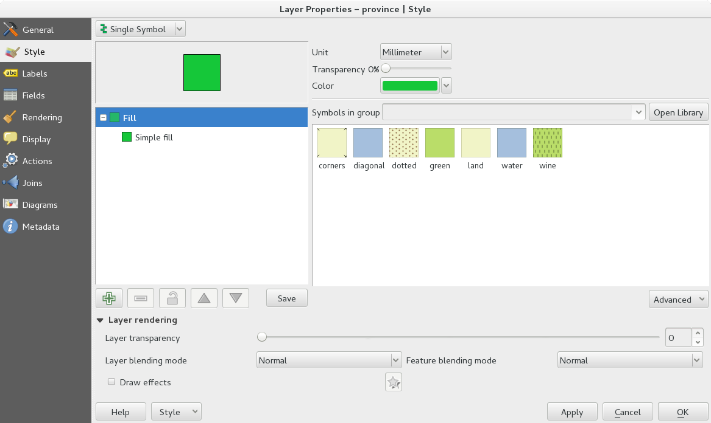
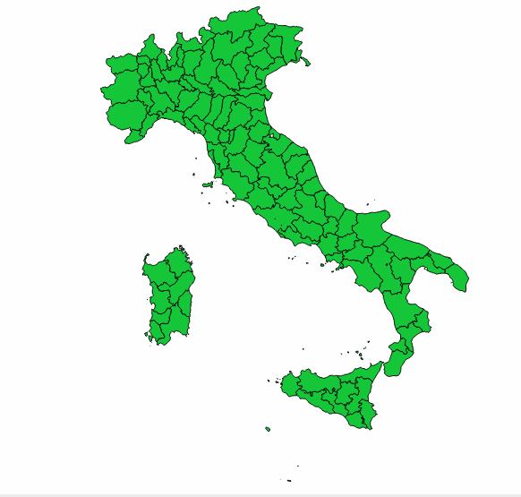
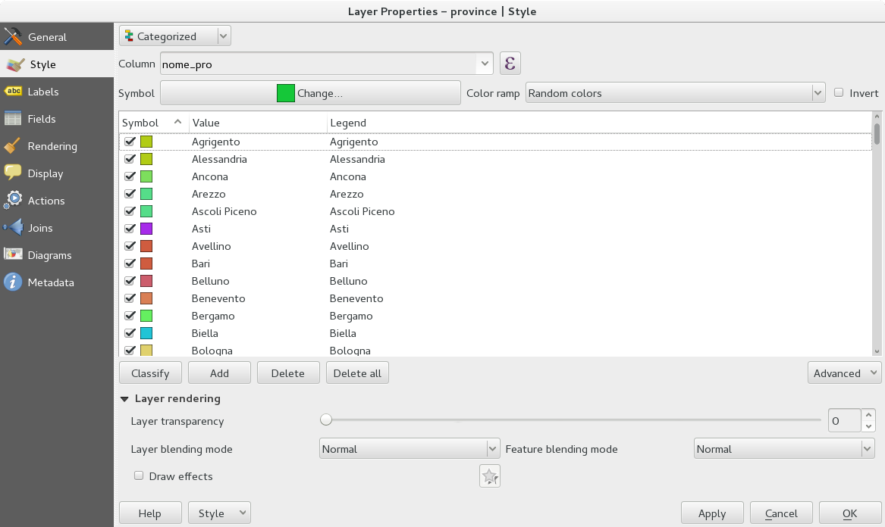
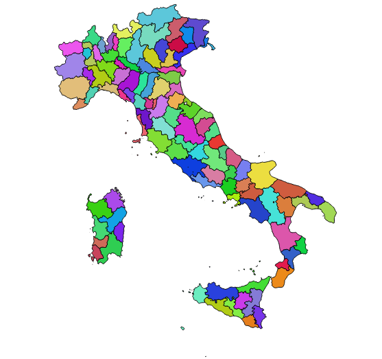
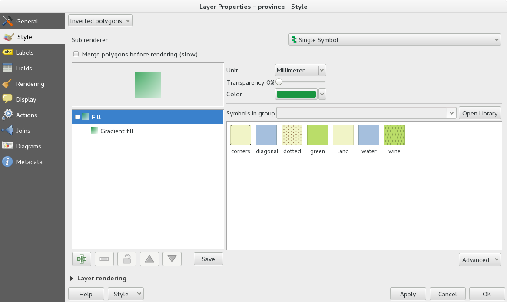
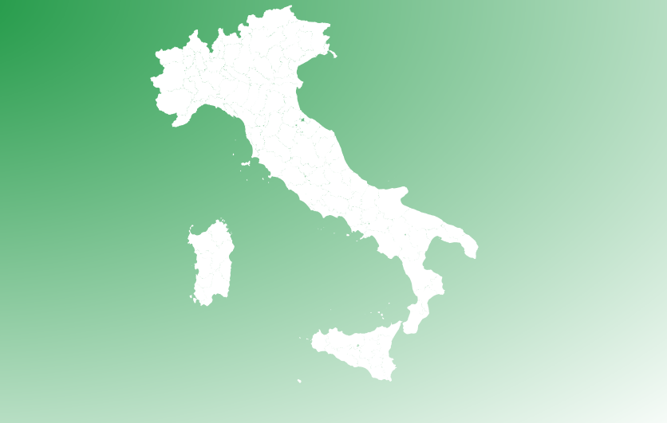

Stili¶
Ogni vettore può essere stilizzato in funzione degli attributi che ha.
Simbolo singolo¶
Ogni geometria ha lo stesso colore, in pratica non viene assegnato un colore in funzione di nessun attributo. È una semplice visualizzazione dell’oggetto. Ci sono molti tipi di simboli diversi (riempimento semplice, puntuale, solo contorni, ecc...).
 Categorizzato¶
L’oggetto viene classificato a seconda di un attributo presente nel database, esempio un colore diverso per ogni comune. Si possono scegliere colori casuali o scale di colori predefinite. In aggiunta è possibile anche creare una scala personalizzata o caricarne molte altre.
 Graduato¶
Viene assegnata una scala di colori in funzione di un attributo numerico del vettore, per esempio la superficie di ogni geometria. Oltre alla scelta della scala di colori è possibile scegliere il numero delle classi e il metodo di classificazione:
- Intervallo uguale: classi di uguale ampiezza (non importa quante geometrie facciano parte di ogni classe). Utile quando la variabilità dei dati è bassa
- Quantile: divide in classi in modo che per ogni classe ci sia lo stesso numero di elementi.
- Natual breaks (Jenks): lo scopo è quello di minimizzare le differenze all’interno di ogni classe e massimizzando quelle fra le classi
- Deviazione standard: i valori degli elementi sono suddivisi in base alla dispersione rispetto alla media totale. Man mano che le classi aumentano, aumenta anche la differenza degli elementi rispetto al valore medio
- Pretty breaks: genera dei gruppi con valori progressivi secondo andamento esponenziale
Poligoni invertiti¶
Lo stile scelto cadrà al di fuori del poligono. Utile se usato con simbolo singolo e qualche sfumatura.
 